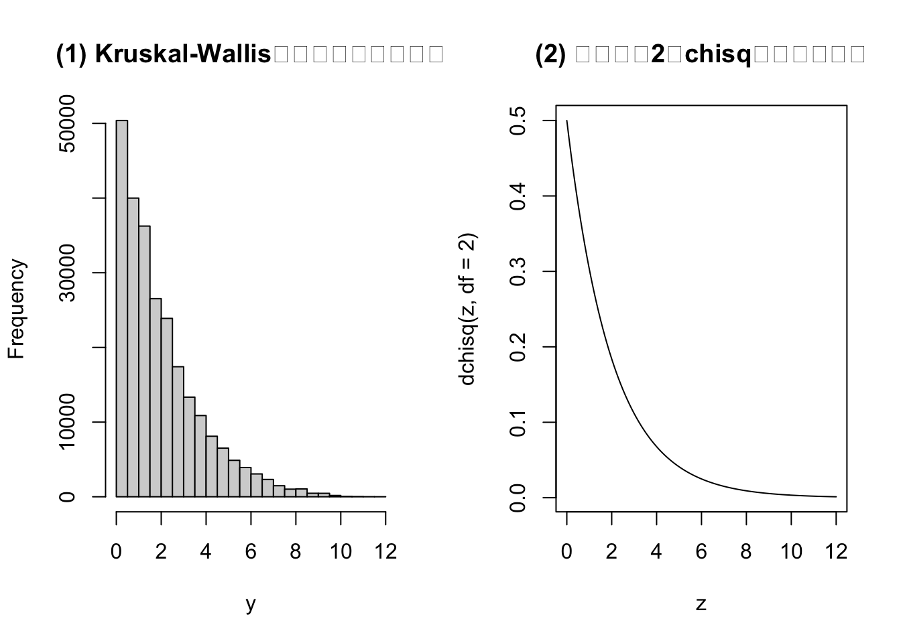
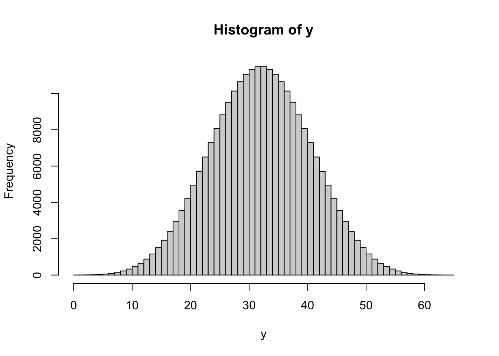
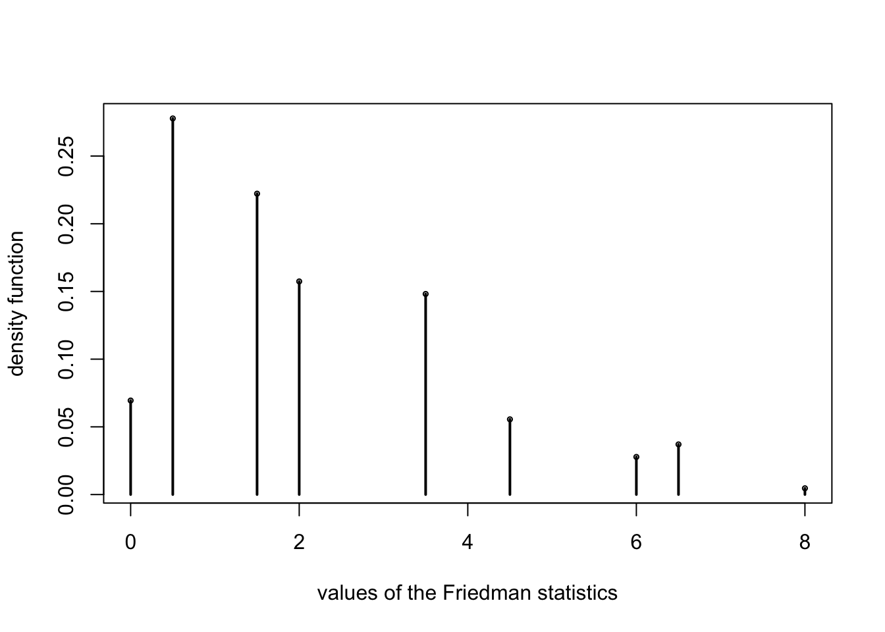
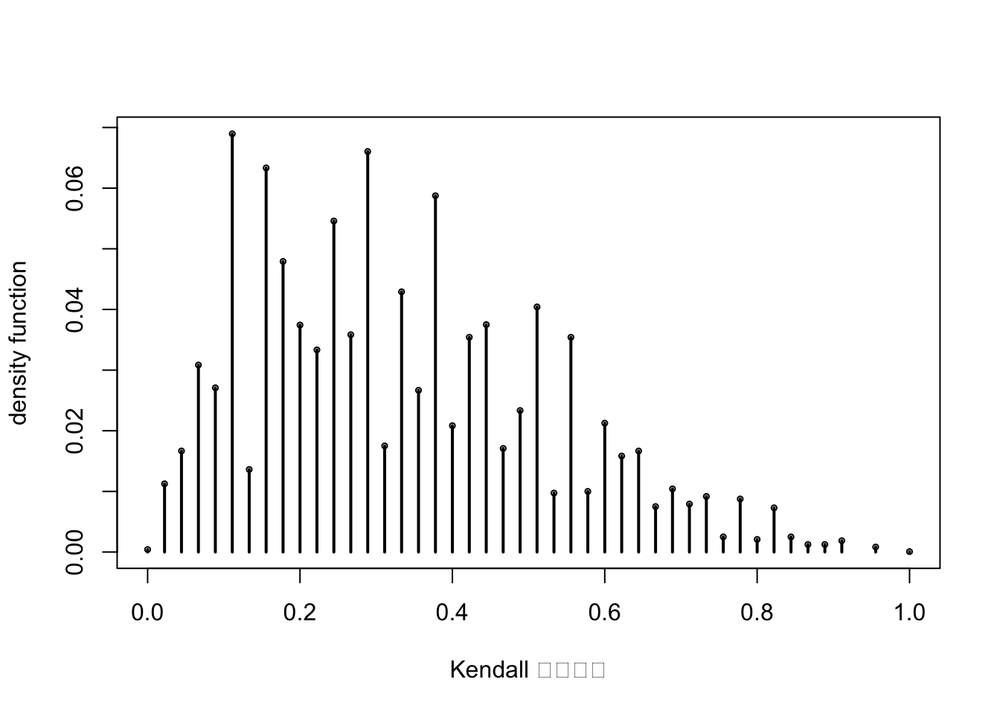
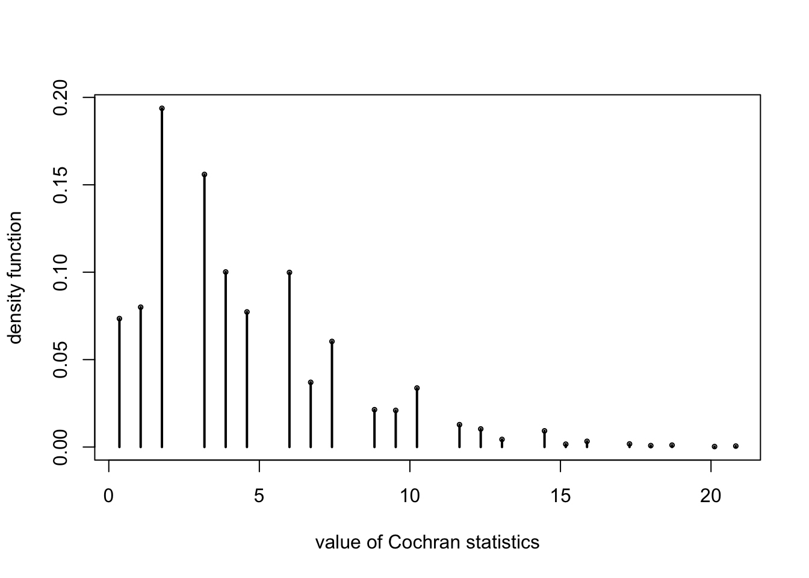
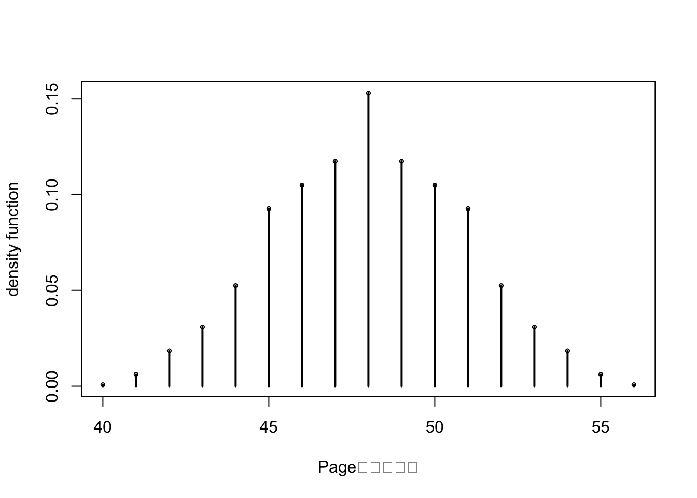
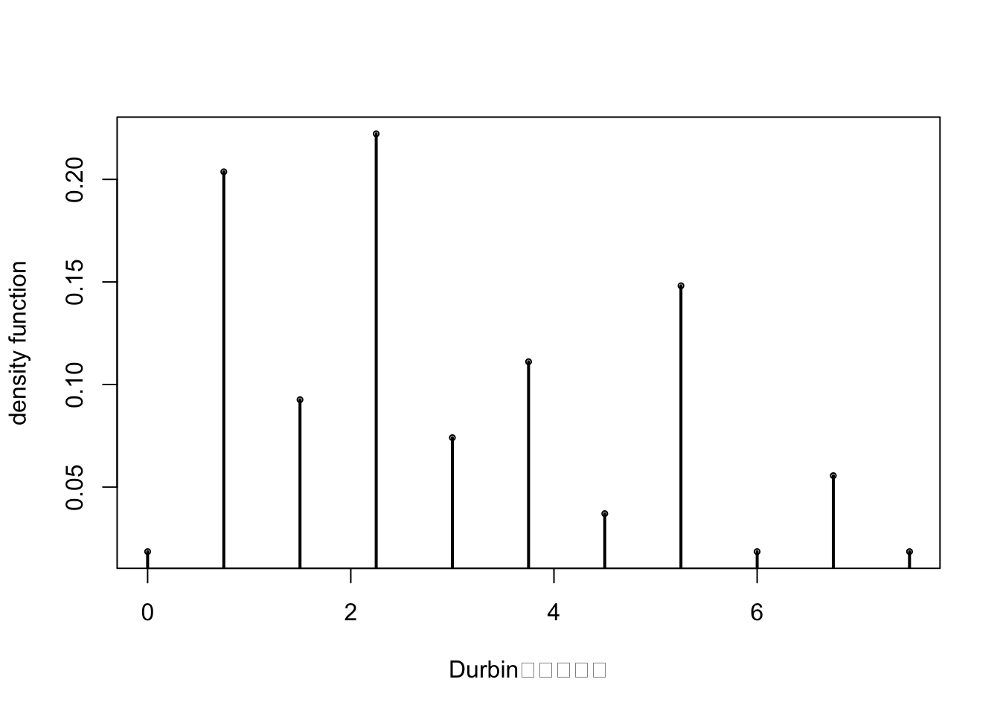

第 4 章 多样本位置参数
单因素问题，独立样本
4.1 4.1 Kruskal-Wallis秩和检验
- 类比于单因素方差分析
- 不依赖于正态假设和方差齐性假设
- Wilcoxon秩和检验的推广
4.1.1 例：训练方式
A <- c(60, 75, 62, 76, 73, 98, 86)
B <- c(72, 52, 68, 82, 74, 64, 87)
C <- c(61, 85, 78, 66, 70, 59, 69, 79)
D <- c(63, 58, 65, 71, 84, 77, 80, 89)
##kruskal-wallis test
kruskal.test(list(A,B,C,D))##
## Kruskal-Wallis rank sum test
##
## data: list(A, B, C, D)
## Kruskal-Wallis chi-squared = 0.55369, df = 3, p-value = 0.9069KW.test=function(m1=5,m2=5,m3=4,Hvalue=9.4114){
# this program is for m1=5, m2=5, and m3 can be any integer
m<-m1+m2+m3;
Jh5=function(m){
a<-rep(0,5)
for (i in 1:(m-4)){
for (j in (i+1):(m-3)){
for (k in (j+1):(m-2)){
for (l in (k+1):(m-1)){
for (f in (l+1):m){a<-rbind(a,c(i,j,k,l,f))}
}
}
}
}
a[2:nrow(a),]
}
JTid1<-Jh5(m1+m2+m3);
n1<-nrow(JTid1);
JTid2<-Jh5(m2+m3);
n2<-nrow(JTid2);
nn<-n1*n2;
const<-1:m;
y<-0
for (i in 1:n1){
for (j in 1:n2){
temp1<-c(JTid1[i,]);
temp2<-(const[-temp1])[c(JTid2[j,])];
temp3<-const[-c(temp1,temp2)];
y<-c(y,12/(m*(m+1))*((sum(temp1))^2/m1+(sum(temp2))^2/m2+(sum(temp3))^2/m3)-3*(m+1))
}
}
y<-y[2:(nn+1)];
pvalue<-(sum(y>=Hvalue))/nn;
y<-sort(y);aaa<-aa<-y[1];tempc<-1
for (i in 2:nn){
if((y[i]-aa)>10^{-12}){
aaa<-c(aaa,y[i]);aa<-y[i];tempc<-c(tempc,1-(i-1)/nn)
}
}
out<-cbind(aaa,tempc);z=seq(0,12,0.1);
par(mfrow=c(1,2))
hist(y,main="(1) Kruskal-Wallis检验精确分布直方图")
plot(z,dchisq(z,df=2),type="l",main="(2) 自由度为2的chisq分布密度函数")
list(c("(m1,m2,m3)"=c(m1,m2,m3),"H"=Hvalue,"pval"=pvalue),out)
}
KW.test() ##time-consuming
## [[1]]
## (m1,m2,m3)1 (m1,m2,m3)2 (m1,m2,m3)3 H pval
## 5.000000000 5.000000000 4.000000000 9.411400000 0.001347858
##
## [[2]]
## aaa tempc
## [1,] 0.005714286 1.000000e+00
## [2,] 0.020000000 9.938078e-01
## [3,] 0.042857143 9.878772e-01
## [4,] 0.051428571 9.759843e-01
## [5,] 0.085714286 9.698635e-01
## [6,] 0.111428571 9.578755e-01
## [7,] 0.131428571 9.462680e-01
## [8,] 0.142857143 9.345179e-01
## [9,] 0.180000000 9.286269e-01
## [10,] 0.202857143 9.230928e-01
## [11,] 0.222857143 9.121038e-01
## [12,] 0.225714286 9.008135e-01
## [13,] 0.271428571 8.897769e-01
## [14,] 0.280000000 8.791050e-01
## [15,] 0.325714286 8.736026e-01
## [16,] 0.360000000 8.625501e-01
## [17,] 0.371428571 8.517197e-01
## [18,] 0.385714286 8.411430e-01
## [19,] 0.462857143 8.205287e-01
## [20,] 0.500000000 8.050917e-01
## [21,] 0.522857143 8.002553e-01
## [22,] 0.542857143 7.904873e-01
## [23,] 0.545714286 7.806559e-01
## [24,] 0.591428571 7.711098e-01
## [25,] 0.600000000 7.520971e-01
## [26,] 0.691428571 7.424084e-01
## [27,] 0.705714286 7.377147e-01
## [28,] 0.725714286 7.287237e-01
## [29,] 0.751428571 7.195582e-01
## [30,] 0.771428571 7.107734e-01
## [31,] 0.782857143 6.926962e-01
## [32,] 0.842857143 6.836576e-01
## [33,] 0.862857143 6.751423e-01
## [34,] 0.865714286 6.665160e-01
## [35,] 0.965714286 6.580483e-01
## [36,] 0.980000000 6.537907e-01
## [37,] 1.000000000 6.497946e-01
## [38,] 1.002857143 6.416916e-01
## [39,] 1.011428571 6.256125e-01
## [40,] 1.045714286 6.174778e-01
## [41,] 1.071428571 6.095175e-01
## [42,] 1.140000000 5.940250e-01
## [43,] 1.182857143 5.865880e-01
## [44,] 1.185714286 5.790083e-01
## [45,] 1.285714286 5.716189e-01
## [46,] 1.300000000 5.533673e-01
## [47,] 1.322857143 5.465011e-01
## [48,] 1.331428571 5.395557e-01
## [49,] 1.345714286 5.322614e-01
## [50,] 1.365714286 5.253477e-01
## [51,] 1.411428571 5.183388e-01
## [52,] 1.422857143 5.115202e-01
## [53,] 1.482857143 5.045272e-01
## [54,] 1.551428571 4.979941e-01
## [55,] 1.560000000 4.916829e-01
## [56,] 1.605714286 4.851498e-01
## [57,] 1.620000000 4.788386e-01
## [58,] 1.642857143 4.697683e-01
## [59,] 1.651428571 4.578279e-01
## [60,] 1.685714286 4.547833e-01
## [61,] 1.711428571 4.487734e-01
## [62,] 1.731428571 4.428587e-01
## [63,] 1.742857143 4.368964e-01
## [64,] 1.802857143 4.308707e-01
## [65,] 1.825714286 4.252097e-01
## [66,] 1.871428571 4.196121e-01
## [67,] 1.962857143 4.142207e-01
## [68,] 1.971428571 4.089561e-01
## [69,] 1.985714286 3.979988e-01
## [70,] 2.005714286 3.928135e-01
## [71,] 2.031428571 3.820307e-01
## [72,] 2.051428571 3.769088e-01
## [73,] 2.062857143 3.715649e-01
## [74,] 2.100000000 3.690119e-01
## [75,] 2.142857143 3.640328e-01
## [76,] 2.191428571 3.538684e-01
## [77,] 2.245714286 3.491588e-01
## [78,] 2.280000000 3.441955e-01
## [79,] 2.305714286 3.393908e-01
## [80,] 2.351428571 3.348715e-01
## [81,] 2.371428571 3.304949e-01
## [82,] 2.382857143 3.260549e-01
## [83,] 2.420000000 3.216149e-01
## [84,] 2.442857143 3.194900e-01
## [85,] 2.462857143 3.066616e-01
## [86,] 2.465714286 3.021899e-01
## [87,] 2.511428571 2.981146e-01
## [88,] 2.520000000 2.940234e-01
## [89,] 2.565714286 2.918906e-01
## [90,] 2.600000000 2.876885e-01
## [91,] 2.625714286 2.837242e-01
## [92,] 2.691428571 2.797441e-01
## [93,] 2.740000000 2.756846e-01
## [94,] 2.782857143 2.720216e-01
## [95,] 2.785714286 2.682793e-01
## [96,] 2.831428571 2.573696e-01
## [97,] 2.840000000 2.537225e-01
## [98,] 2.885714286 2.500436e-01
## [99,] 2.931428571 2.463965e-01
## [100,] 2.945714286 2.392607e-01
## [101,] 2.965714286 2.358832e-01
## [102,] 2.991428571 2.324104e-01
## [103,] 3.022857143 2.290804e-01
## [104,] 3.082857143 2.240775e-01
## [105,] 3.102857143 2.209378e-01
## [106,] 3.160000000 2.177029e-01
## [107,] 3.240000000 2.145632e-01
## [108,] 3.242857143 2.114869e-01
## [109,] 3.265714286 2.085534e-01
## [110,] 3.285714286 2.026862e-01
## [111,] 3.311428571 1.996892e-01
## [112,] 3.342857143 1.968666e-01
## [113,] 3.380000000 1.880659e-01
## [114,] 3.402857143 1.867180e-01
## [115,] 3.471428571 1.840540e-01
## [116,] 3.540000000 1.761889e-01
## [117,] 3.571428571 1.736359e-01
## [118,] 3.585714286 1.697747e-01
## [119,] 3.651428571 1.673485e-01
## [120,] 3.742857143 1.623535e-01
## [121,] 3.745714286 1.599432e-01
## [122,] 3.791428571 1.553447e-01
## [123,] 3.800000000 1.530295e-01
## [124,] 3.845714286 1.506351e-01
## [125,] 3.882857143 1.483358e-01
## [126,] 3.891428571 1.439592e-01
## [127,] 3.905714286 1.416441e-01
## [128,] 3.925714286 1.395192e-01
## [129,] 3.951428571 1.372834e-01
## [130,] 3.971428571 1.352536e-01
## [131,] 4.042857143 1.330653e-01
## [132,] 4.062857143 1.310991e-01
## [133,] 4.165714286 1.269762e-01
## [134,] 4.200000000 1.240506e-01
## [135,] 4.202857143 1.221001e-01
## [136,] 4.245714286 1.202607e-01
## [137,] 4.271428571 1.184054e-01
## [138,] 4.291428571 1.148851e-01
## [139,] 4.302857143 1.131725e-01
## [140,] 4.362857143 1.114124e-01
## [141,] 4.382857143 1.097474e-01
## [142,] 4.385714286 1.079873e-01
## [143,] 4.485714286 1.063698e-01
## [144,] 4.500000000 1.048000e-01
## [145,] 4.520000000 1.009308e-01
## [146,] 4.522857143 9.934510e-02
## [147,] 4.531428571 9.785453e-02
## [148,] 4.591428571 9.617367e-02
## [149,] 4.611428571 9.473067e-02
## [150,] 4.660000000 9.311324e-02
## [151,] 4.705714286 9.171781e-02
## [152,] 4.805714286 8.894280e-02
## [153,] 4.842857143 8.824509e-02
## [154,] 4.851428571 8.558109e-02
## [155,] 4.865714286 8.418566e-02
## [156,] 4.885714286 8.293294e-02
## [157,] 4.911428571 7.893694e-02
## [158,] 4.942857143 7.765251e-02
## [159,] 4.980000000 7.636808e-02
## [160,] 5.022857143 7.511536e-02
## [161,] 5.071428571 7.383093e-02
## [162,] 5.125714286 7.267336e-02
## [163,] 5.162857143 7.019964e-02
## [164,] 5.171428571 6.910550e-02
## [165,] 5.185714286 6.785278e-02
## [166,] 5.205714286 6.672692e-02
## [167,] 5.231428571 6.552178e-02
## [168,] 5.262857143 6.445935e-02
## [169,] 5.322857143 6.327006e-02
## [170,] 5.400000000 6.122449e-02
## [171,] 5.445714286 5.905206e-02
## [172,] 5.460000000 5.806892e-02
## [173,] 5.482857143 5.714920e-02
## [174,] 5.491428571 5.621363e-02
## [175,] 5.525714286 5.576170e-02
## [176,] 5.571428571 5.485784e-02
## [177,] 5.582857143 5.205112e-02
## [178,] 5.620000000 5.102041e-02
## [179,] 5.642857143 5.016412e-02
## [180,] 5.665714286 4.930784e-02
## [181,] 5.711428571 4.845155e-02
## [182,] 5.780000000 4.761112e-02
## [183,] 5.802857143 4.721469e-02
## [184,] 5.811428571 4.642183e-02
## [185,] 5.871428571 4.472512e-02
## [186,] 5.902857143 4.321869e-02
## [187,] 5.962857143 4.240997e-02
## [188,] 5.982857143 4.172811e-02
## [189,] 5.985714286 4.093526e-02
## [190,] 6.031428571 4.022168e-02
## [191,] 6.085714286 3.950811e-02
## [192,] 6.100000000 3.796997e-02
## [193,] 6.122857143 3.728811e-02
## [194,] 6.145714286 3.660625e-02
## [195,] 6.165714286 3.527425e-02
## [196,] 6.211428571 3.457653e-02
## [197,] 6.222857143 3.387882e-02
## [198,] 6.282857143 3.354582e-02
## [199,] 6.302857143 3.291153e-02
## [200,] 6.351428571 3.229310e-02
## [201,] 6.405714286 3.053296e-02
## [202,] 6.440000000 2.988282e-02
## [203,] 6.451428571 2.926439e-02
## [204,] 6.485714286 2.864596e-02
## [205,] 6.531428571 2.809096e-02
## [206,] 6.542857143 2.753596e-02
## [207,] 6.602857143 2.696510e-02
## [208,] 6.622857143 2.644181e-02
## [209,] 6.625714286 2.593438e-02
## [210,] 6.671428571 2.542695e-02
## [211,] 6.760000000 2.490367e-02
## [212,] 6.762857143 2.442795e-02
## [213,] 6.771428571 2.398395e-02
## [214,] 6.785714286 2.300081e-02
## [215,] 6.805714286 2.209695e-02
## [216,] 6.831428571 2.165295e-02
## [217,] 6.900000000 2.122481e-02
## [218,] 6.942857143 2.040023e-02
## [219,] 7.000000000 1.909995e-02
## [220,] 7.045714286 1.888588e-02
## [221,] 7.080000000 1.847359e-02
## [222,] 7.105714286 1.806130e-02
## [223,] 7.171428571 1.769659e-02
## [224,] 7.182857143 1.733187e-02
## [225,] 7.220000000 1.690373e-02
## [226,] 7.242857143 1.676102e-02
## [227,] 7.265714286 1.577787e-02
## [228,] 7.311428571 1.542902e-02
## [229,] 7.320000000 1.515944e-02
## [230,] 7.425714286 1.484230e-02
## [231,] 7.445714286 1.423973e-02
## [232,] 7.471428571 1.393844e-02
## [233,] 7.491428571 1.363716e-02
## [234,] 7.502857143 1.301873e-02
## [235,] 7.562857143 1.268573e-02
## [236,] 7.585714286 1.238444e-02
## [237,] 7.631428571 1.160744e-02
## [238,] 7.640000000 1.133787e-02
## [239,] 7.685714286 1.102073e-02
## [240,] 7.720000000 1.073530e-02
## [241,] 7.765714286 1.046572e-02
## [242,] 7.791428571 1.021201e-02
## [243,] 7.822857143 9.783867e-03
## [244,] 7.860000000 9.649081e-03
## [245,] 7.902857143 9.411224e-03
## [246,] 7.905714286 9.189223e-03
## [247,] 8.005714286 8.967223e-03
## [248,] 8.042857143 8.650080e-03
## [249,] 8.051428571 8.491508e-03
## [250,] 8.065714286 8.190222e-03
## [251,] 8.085714286 7.984079e-03
## [252,] 8.131428571 7.762079e-03
## [253,] 8.142857143 7.571793e-03
## [254,] 8.222857143 6.874078e-03
## [255,] 8.225714286 6.699650e-03
## [256,] 8.271428571 6.541078e-03
## [257,] 8.280000000 6.208078e-03
## [258,] 8.340000000 5.779934e-03
## [259,] 8.362857143 5.637220e-03
## [260,] 8.371428571 5.478648e-03
## [261,] 8.385714286 5.320077e-03
## [262,] 8.431428571 5.177362e-03
## [263,] 8.462857143 5.018791e-03
## [264,] 8.522857143 4.796791e-03
## [265,] 8.542857143 4.669933e-03
## [266,] 8.545714286 4.400362e-03
## [267,] 8.682857143 4.273504e-03
## [268,] 8.691428571 4.178361e-03
## [269,] 8.725714286 3.805718e-03
## [270,] 8.751428571 3.678861e-03
## [271,] 8.771428571 3.567861e-03
## [272,] 8.965714286 3.441003e-03
## [273,] 8.980000000 3.298289e-03
## [274,] 9.000000000 3.219003e-03
## [275,] 9.011428571 2.933574e-03
## [276,] 9.025714286 2.838431e-03
## [277,] 9.071428571 2.489574e-03
## [278,] 9.102857143 2.315145e-03
## [279,] 9.162857143 1.966288e-03
## [280,] 9.231428571 1.887002e-03
## [281,] 9.285714286 1.601573e-03
## [282,] 9.322857143 1.411287e-03
## [283,] 9.411428571 1.347858e-03
## [284,] 9.502857143 1.094144e-03
## [285,] 9.505714286 1.030715e-03
## [286,] 9.605714286 9.831438e-04
## [287,] 9.642857143 9.514295e-04
## [288,] 9.651428571 7.135721e-04
## [289,] 9.685714286 6.342863e-04
## [290,] 9.925714286 5.867149e-04
## [291,] 9.985714286 4.281433e-04
## [292,] 10.051428571 3.964290e-04
## [293,] 10.062857143 3.647147e-04
## [294,] 10.100000000 3.171432e-04
## [295,] 10.260000000 2.854289e-04
## [296,] 10.511428571 1.902859e-04
## [297,] 10.520000000 1.744287e-04
## [298,] 10.565714286 1.427144e-04
## [299,] 10.645714286 1.347858e-04
## [300,] 11.022857143 7.135721e-05
## [301,] 11.082857143 5.550006e-05
## [302,] 11.571428571 2.378574e-05#[[1]]
#(m1,m2,m3)1 (m1,m2,m3)2 (m1,m2,m3)3 H pval
#5.000000000 5.000000000 4.000000000 9.411400000 0.001347858 4.2 4.2 正态记分检验
- 单样本、双样本正态记分检验的推广
d=wtloss[order(wtloss[,1]),]
n1=sum(d[,2]==1)
n2=sum(d[,2]==2)
n3=sum(d[,2]==3)
n=nrow(d)
r=rank(d[,1])
w=qnorm(r/(n+1))
z=cbind(d,r,w)
nn=sum(sum(w[z[,2]==1])^2/n1,sum(w[z[,2]==2])^2/n2,sum(w[z[,2]==3])^2/n3)
(Tstat=(n-1)*nn/sum(w^2))## [1] 9.078947pchisq(Tstat,3-1,low=F)## [1] 0.010679034.3 4.3 Jonckheere-Terpstra检验
- 单边（有序）的备择假设
- 注意与Cox-Stuart趋势检验的区分
4.3.1 精确检验
JT.test=function(m1=5,m2=5,m3=4,JTvalue=59){
# this program is for m1=5, m2=5, and m3 can be any integer
m<-m1+m2+m3;
Jh5=function(m){
a=rep(0,5)
for (i in 1:(m-4)){
for (j in (i+1):(m-3)){
for (k in (j+1):(m-2)){
for (l in (k+1):(m-1)){
for (f in (l+1):m){a<-rbind(a,c(i,j,k,l,f))}
}
}
}
}
a[2:nrow(a),]
};
JTid1=Jh5(m1+m2+m3);n1=nrow(JTid1)
JTid2=Jh5(m2+m3);n2=nrow(JTid2);
const=1:m;
JT=rep(0,n1*n2)
for (i in 1:n1){
for (j in 1:n2){
temp1<-c(JTid1[i,]);
temp2=(const[-temp1])[c(JTid2[j,])];
temp3=const[-c(temp1,temp2)];
JT[j+(i-1)*n2]<-sum(outer(temp2,temp1,">"))+
sum(outer(temp3,temp1,">"))+sum(outer(temp3,temp2,">"))
}
}
y=JT;
pval=(sum(y>=JTvalue))/(n1*n2);hist(y,breaks=min(y):max(y))
z=c(0,hist(y,breaks=min(y):max(y))$counts)
list("(m1,m2,m3)"=c(m1,m2,m3),c(JTvalue,pval),
cbind(min(y):max(y),z,rev(cumsum(rev(z)))/(n1*n2)))}
JT.test()
## $`(m1,m2,m3)`
## [1] 5 5 4
##
## [[2]]
## [1] 5.900000e+01 5.272505e-04
##
## [[3]]
## z
## [1,] 0 0 1.000000e+00
## [2,] 1 3 1.000000e+00
## [3,] 2 5 9.999881e-01
## [4,] 3 10 9.999683e-01
## [5,] 4 20 9.999286e-01
## [6,] 5 35 9.998494e-01
## [7,] 6 60 9.997106e-01
## [8,] 7 96 9.994727e-01
## [9,] 8 151 9.990922e-01
## [10,] 9 226 9.984936e-01
## [11,] 10 331 9.975976e-01
## [12,] 11 468 9.962855e-01
## [13,] 12 650 9.944302e-01
## [14,] 13 877 9.918534e-01
## [15,] 14 1162 9.883767e-01
## [16,] 15 1505 9.837702e-01
## [17,] 16 1917 9.778039e-01
## [18,] 17 2393 9.702044e-01
## [19,] 18 2941 9.607179e-01
## [20,] 19 3551 9.490589e-01
## [21,] 20 4226 9.349817e-01
## [22,] 21 4948 9.182286e-01
## [23,] 22 5713 8.986133e-01
## [24,] 23 6499 8.759653e-01
## [25,] 24 7296 8.502014e-01
## [26,] 25 8076 8.212779e-01
## [27,] 26 8824 7.892623e-01
## [28,] 27 9514 7.542814e-01
## [29,] 28 10130 7.165652e-01
## [30,] 29 10647 6.764069e-01
## [31,] 30 11052 6.341991e-01
## [32,] 31 11329 5.903858e-01
## [33,] 32 11471 5.454744e-01
## [34,] 33 11471 5.000000e-01
## [35,] 34 11329 4.545256e-01
## [36,] 35 11052 4.096142e-01
## [37,] 36 10647 3.658009e-01
## [38,] 37 10130 3.235931e-01
## [39,] 38 9514 2.834348e-01
## [40,] 39 8824 2.457186e-01
## [41,] 40 8076 2.107377e-01
## [42,] 41 7296 1.787221e-01
## [43,] 42 6499 1.497986e-01
## [44,] 43 5713 1.240347e-01
## [45,] 44 4948 1.013867e-01
## [46,] 45 4226 8.177140e-02
## [47,] 46 3551 6.501832e-02
## [48,] 47 2941 5.094112e-02
## [49,] 48 2393 3.928215e-02
## [50,] 49 1917 2.979560e-02
## [51,] 50 1505 2.219606e-02
## [52,] 51 1162 1.622980e-02
## [53,] 52 877 1.162330e-02
## [54,] 53 650 8.146615e-03
## [55,] 54 468 5.569827e-03
## [56,] 55 331 3.714539e-03
## [57,] 56 226 2.402360e-03
## [58,] 57 151 1.506430e-03
## [59,] 58 96 9.078223e-04
## [60,] 59 60 5.272505e-04
## [61,] 60 35 2.893931e-04
## [62,] 61 20 1.506430e-04
## [63,] 62 10 7.135721e-05
## [64,] 63 5 3.171432e-05
## [65,] 64 2 1.189287e-05
## [66,] 65 1 3.964290e-064.3.2 大样本近似
d=read.table("data/wtloss.txt")
U=matrix(0,3,3);k=max(d[,2]);
for(i in 1:(k-1)){
for(j in (i+1):k){
U[i,j]=sum(outer(d[d[,2]==i,1],d[d[,2]==j,1],"-")<0)+sum(outer(d[d[,2]==i,1],d[d[,2]==j,1],"-")==0)/2;
}
}
J=sum(U);
ni=NULL;
for(i in 1:k) ni=c(ni,sum(d[,2]==i));
N=sum(ni);
Z=(J-(N^2-sum(ni^2))/4)/sqrt((N^2*(2*N+3)-sum(ni^2*(2*ni+3)))/72);
pnorm(Z,low=F)## [1] 0.0009566765双因素问题
4.4 4.5 完全区组设计：Friedman秩和检验
- 类比于Randomized Block Design
- Y是连续的
- 不依赖于正态假设和方差齐性假设
4.4.1 精确检验
Friedman=function(k=3,b=4,W0=0.8125){
perm=function(n=4){
A=rbind(c(1,2),c(2,1));
if (n>=3){
for (i in 3:n){
temp=cbind(rep(i,nrow(A)),A);
for (j in (1:(i-2))){
temp=rbind(temp,cbind(A[,1:j],rep(i,nrow(A)),A[,(j+1):(i-1)]))
};
temp=rbind(temp,cbind(A,rep(i,nrow(A))));A=temp
};
};
A
}
B=perm(k); # all possible permutations
nn=nrow(B);
ind=rep(1:nn,each=nn^(b-1));
for (i in 1:(b-1)){
ind=cbind(ind,rep(rep(1:nn,each=nn^(b-1-i)),nn^(i)))
};
nn=nrow(ind);
y=rep(0,nn);
for (i in 1:nn){
R=apply(B[ind[i,],],2,sum);
y[i]=12/(b*k*(k+1))*sum(R^2)-3*b*(k+1)
};
y0=sort(unique(y));
ycnt=ydnt=NULL;
for (i in 1:length(y0)){
ydnt=c(ydnt,length(y[y==y0[i]]));
ycnt=c(ycnt,length(y[y>=y0[i]]))
};
plot(y0,ydnt/nn,cex=0.5,ylab="density function",
xlab="values of the Friedman statistics");
for (i in 1:length(y0)) points(c(y0[i],y0[i]),c(ydnt[i]/nn,0),type="l",lwd=2);
list(t(cbind(W=y0/b/(k-1),Q=y0,density=ydnt/nn,pvalue=ycnt/nn)),
Pvalue=length(y[y>=(b*(k-1)*W0)])/nn)}
Friedman()
## [[1]]
## [,1] [,2] [,3] [,4] [,5] [,6]
## W 0.00000000 0.0625000 0.1875000 0.2500000 0.4375000 0.56250000
## Q 0.00000000 0.5000000 1.5000000 2.0000000 3.5000000 4.50000000
## density 0.06944444 0.2777778 0.2222222 0.1574074 0.1481481 0.05555556
## pvalue 1.00000000 0.9305556 0.6527778 0.4305556 0.2731481 0.12500000
## [,7] [,8] [,9]
## W 0.75000000 0.81250000 1.00000000
## Q 6.00000000 6.50000000 8.00000000
## density 0.02777778 0.03703704 0.00462963
## pvalue 0.06944444 0.04166667 0.00462963
##
## $Pvalue
## [1] 0.041666674.4.2 大样本近似
X=read.table("data/blead.txt")
friedman.test(as.matrix(X))##
## Friedman rank sum test
##
## data: as.matrix(X)
## Friedman chi-squared = 6.5, df = 2, p-value = 0.03877X=t(X);Y=apply(X,2,rank);R=apply(Y,1,sum);k=nrow(X);b=ncol(X);
Q=12/(b*k*(k+1))*sum(R^2)-3*b*(k+1) #Q=12/(b*k*(k+1))*sum((R-mean(R))^2)
Q## [1] 6.5(pvalue=pchisq(Q,k-1,low=F))## [1] 0.038774214.5 4.6 Kendall协同系数检验
- 评估或排序是否一致
- 区组设计，Y为有序整数（排名或分数）
- 二元变量的Kendall’s \(\tau\)在多元情况的推广
- 注意与Friedman秩和检验统计量的联系
d=read.table("data/airp35.txt");
R=apply(d,2,sum);b=nrow(d);k=ncol(d);
S=sum((R-b*(k+1)/2)^2);
(W=12*S/b^2/(k^3-k));## [1] 0.7333333(Q=W*b*(k-1))## [1] 8.8Kendall=function(k=5,b=3,W0=0.733){
perm=function(n=4){
A=rbind(c(1,2),c(2,1));
if (n>=3){
for (i in 3:n){
temp=cbind(rep(i,nrow(A)),A);
for (j in (1:(i-2))){
temp=rbind(temp,cbind(A[,1:j],rep(i,nrow(A)),A[,(j+1):(i-1)]))
};
temp=rbind(temp,cbind(A,rep(i,nrow(A))));A=temp
};
};A
}
B=perm(k); # all possible permutations
nn=nrow(B);ind=rep(1:nn,each=nn^(b-1));
for (i in 1:(b-1)){
ind=cbind(ind,rep(rep(1:nn,each=nn^(b-1-i)),nn^(i)))
};
nn=nrow(ind);y=rep(0,nn);
for (i in 1:nn){
R=apply(B[ind[i,],],2,sum);
y[i]=12/(b*k*(k+1))*sum(R^2)-3*b*(k+1)
};
y0=sort(unique(y));
ycnt=ydnt=NULL;
for (i in 1:length(y0)){
ydnt=c(ydnt,length(y[y==y0[i]]));
ycnt=c(ycnt,length(y[y>=y0[i]]))
};
w0=y0/b/(k-1);
plot(w0,ydnt/nn,cex=0.5,ylab="density function",xlab="Kendall 协同系数");
for (i in 1:length(y0)) points(c(w0[i],w0[i]),c(ydnt[i]/nn,0),type="l",lwd=2)
list(t(cbind(W=w0,Q=y0,density=ydnt/nn,pvalue=ycnt/nn)),
Pvalue=length(y[y>=(b*(k-1)*W0)])/nn)
}
Kendall()
## [[1]]
## [,1] [,2] [,3] [,4] [,5] [,6]
## W 0.0000000000 0.02222222 0.04444444 0.06666667 0.08888889 0.11111111
## Q 0.0000000000 0.26666667 0.53333333 0.80000000 1.06666667 1.33333333
## density 0.0004166667 0.01125000 0.01666667 0.03083333 0.02708333 0.06895833
## pvalue 1.0000000000 0.99958333 0.98833333 0.97166667 0.94083333 0.91375000
## [,7] [,8] [,9] [,10] [,11] [,12]
## W 0.13333333 0.15555556 0.17777778 0.20000000 0.22222222 0.24444444
## Q 1.60000000 1.86666667 2.13333333 2.40000000 2.66666667 2.93333333
## density 0.01361111 0.06333333 0.04791667 0.03743056 0.03333333 0.05458333
## pvalue 0.84479167 0.83118056 0.76784722 0.71993056 0.68250000 0.64916667
## [,13] [,14] [,15] [,16] [,17] [,18]
## W 0.26666667 0.28888889 0.3111111 0.33333333 0.35555556 0.3777778
## Q 3.20000000 3.46666667 3.7333333 4.00000000 4.26666667 4.5333333
## density 0.03583333 0.06604167 0.0175000 0.04291667 0.02666667 0.0587500
## pvalue 0.59458333 0.55875000 0.4927083 0.47520833 0.43229167 0.4056250
## [,19] [,20] [,21] [,22] [,23] [,24]
## W 0.40000000 0.42222222 0.4444444 0.46666667 0.48888889 0.51111111
## Q 4.80000000 5.06666667 5.3333333 5.60000000 5.86666667 6.13333333
## density 0.02083333 0.03541667 0.0375000 0.01708333 0.02333333 0.04041667
## pvalue 0.34687500 0.32604167 0.2906250 0.25312500 0.23604167 0.21270833
## [,25] [,26] [,27] [,28] [,29] [,30]
## W 0.533333333 0.55555556 0.5777778 0.6000000 0.62222222 0.64444444
## Q 6.400000000 6.66666667 6.9333333 7.2000000 7.46666667 7.73333333
## density 0.009722222 0.03541667 0.0100000 0.0212500 0.01583333 0.01666667
## pvalue 0.172291667 0.16256944 0.1271528 0.1171528 0.09590278 0.08006944
## [,31] [,32] [,33] [,34] [,35] [,36]
## W 0.66666667 0.68888889 0.711111111 0.733333333 0.75555556 0.77777778
## Q 8.00000000 8.26666667 8.533333333 8.800000000 9.06666667 9.33333333
## density 0.00750000 0.01041667 0.007916667 0.009166667 0.00250000 0.00875000
## pvalue 0.06340278 0.05590278 0.045486111 0.037569444 0.02840278 0.02590278
## [,37] [,38] [,39] [,40] [,41]
## W 0.800000000 0.822222222 0.844444444 0.866666667 0.888888889
## Q 9.600000000 9.866666667 10.133333333 10.400000000 10.666666667
## density 0.002083333 0.007291667 0.002500000 0.001250000 0.001250000
## pvalue 0.017152778 0.015069444 0.007777778 0.005277778 0.004027778
## [,42] [,43] [,44]
## W 0.911111111 9.555556e-01 1.000000e+00
## Q 10.933333333 1.146667e+01 1.200000e+01
## density 0.001875000 8.333333e-04 6.944444e-05
## pvalue 0.002777778 9.027778e-04 6.944444e-05
##
## $Pvalue
## [1] 0.037569444.6 4.7 Cochran检验
- 二元响应的数据
- 解决打结的问题
- 双样本问题McNemar \(\chi^2\)检验的推广
4.6.1 精确检验
Cochran=function(x){
Xpchs=function(n=7,k=5){
#output(n_1,..,n_k)-all possible combination with n_1+...+n_k=n
temp=cbind(n:0,0:n);
if (k>=3){
for (j in 3:k){
a1=temp[,1:(j-2)];a2=temp[,j-1];temp0=NULL;
for (i in 1:length(a2)){
if (j==3) temp0=rbind(temp0,cbind(rep(a1[i],a2[i]+1),a2[i]:0,0:a2[i]))
if (j>3) temp0=rbind(temp0,cbind(matrix(rep(a1[i,],a2[i]+1),
ncol=j-2,byrow=T),a2[i]:0,0:a2[i]))
}
temp=temp0
}
}
temp
}
Xpchs2=function(n=4,k=2){
#output: all 0 and 1 columns, with n-k 0s and k- 1s columns
Xchoose=function(n=4,k=2){
if (k==0) aa=NULL
if (k>=1){
aa=matrix(1:n,ncol=1);m=0;
if(k>1){
for(i in 2:k){
m=m+1;m1=nrow(aa);
aa=cbind(matrix(rep(aa,each=n),ncol=m),rep(1:n,m1))
aa=aa[(aa[,m+1]>aa[,m]),]
}
}
};
aa
};
e01=Xchoose(n,k)
temp=matrix(0,nrow=nrow(e01),ncol=n);
for (j in 1:nrow(temp)){
if (k==1) temp[j,e01[j]]=1
if (k>1) temp[j,e01[j,]]=1
};
temp
}
n=nrow(x);k=ncol(x);
L=apply(x,1,sum);R=apply(x,2,sum);N=sum(R);
Q0=(k*(k-1)*sum((R-mean(R))^2))/(k*N-sum(L^2));
Ni=NULL;
for (i in 1:k-1) Ni=c(Ni,sum(L==i));
Ni=Ni[-1];
eye0=Xpchs2(k,1);temp0=Xpchs(Ni[1],nrow(eye0));Ri0=temp0%*%eye0;
prob0=factorial(Ni[1])/apply(factorial(temp0),1,prod)*(1/nrow(eye0))^(Ni[1]);
if (length(Ni)>1){
for (i in 2:length(Ni)){
eye1=Xpchs2(k,i);
temp1=Xpchs(Ni[i],nrow(eye1));
Ri1=temp1%*%eye1;
prob1=factorial(Ni[i])/apply(factorial(temp1),1,prod)*(1/nrow(eye1))^(Ni[i])
Ri0=matrix(rep(t(Ri0),nrow(Ri1)),byrow=T,ncol=k)+
matrix(rep(Ri1,each=nrow(Ri0)),ncol=k)
prob0=rep(prob0,length(prob1))*rep(prob1,each=length(prob0))
}
}
xa=k*(k-1)*apply((Ri0-apply(Ri0,1,mean))^2,1,sum)/(k*N-sum(L^2))
nn=length(xa);xa0=sort(unique(xa));xacnt=NULL;
for (i in 1:length(xa0)) xacnt=c(xacnt,length(xa[xa==xa0[i]]));
plot(xa0,xacnt/nn,cex=0.5,ylab="density function",xlab="value of Cochran statistics");
for (i in 1:length(xa0)){
points(c(xa0[i],xa0[i]),c(xacnt[i]/nn,0),type="l",lwd=2)
}
list(unique(xa),cbind(rbind(t(x),L),c(R,N)),Q=Q0,
Exactp=sum(prob0[(xa>=Q0)]),pvalue=pchisq(Q0,k-1,low=F))
}
candid=read.table("data/candid.txt");
Cochran(candid[1:10,])
## [[1]]
## [1] 20.8235294 20.1176471 17.2941176 14.4705882 15.1764706 11.6470588
## [7] 9.5294118 18.7058824 15.8823529 12.3529412 10.2352941 7.4117647
## [13] 6.0000000 3.8823529 18.0000000 6.7058824 8.8235294 4.5882353
## [19] 3.1764706 1.7647059 1.0588235 0.3529412 13.0588235
##
## [[2]]
## 1 2 3 4 5 6 7 8 9 10
## V1 0 1 1 0 0 1 1 1 1 1 7
## V2 1 1 0 0 0 1 1 1 1 1 7
## V3 0 1 1 1 1 0 0 0 0 1 5
## V4 0 0 0 0 1 1 0 0 1 0 3
## L 1 3 2 1 2 3 2 2 3 3 22
##
## $Q
## [1] 3.882353
##
## $Exactp
## [1] 0.3203803
##
## $pvalue
## [1] 0.27445134.7 4.8 Page检验
- 备择假设为有序
- 类比于Jonckheere检验
- 完全区组设计
4.7.1 精确检验
Page=function(k=3,b=4,L0=55){
perm=function(n=4){
A=rbind(c(1,2),c(2,1));
if (n>=3){
for (i in 3:n){
temp=cbind(rep(i,nrow(A)),A);
for (j in (1:(i-2))){
temp=rbind(temp,cbind(A[,1:j],rep(i,nrow(A)),A[,(j+1):(i-1)]))
};
temp=rbind(temp,cbind(A,rep(i,nrow(A))));A=temp
};
};
A
}
B=perm(k); # all possible permutations
nn=nrow(B);ind=rep(1:nn,each=nn^(b-1));
for (i in 1:(b-1)){
ind=cbind(ind,rep(rep(1:nn,each=nn^(b-1-i)),nn^(i)))
};
nn=nrow(ind);y=rep(0,nn);
for (i in 1:nn){
R=apply(B[ind[i,],],2,sum);
y[i]=sum((1:k)*R)
};
y0=sort(unique(y));
ycnt=NULL;
for (i in 1:length(y0)) ycnt=c(ycnt, length(y[y==y0[i]]));
plot(y0,ycnt/nn,cex=0.5,ylab="density function",xlab="Page检验统计量");
for (i in 1:length(y0)) points(c(y0[i],y0[i]),c(ycnt[i]/nn,0),type="l",lwd=2)
list(cbind(L=y0,pvalue=ycnt/nn),Pvalue=length(y[y>=L0])/nn)
}
Page()
## [[1]]
## L pvalue
## [1,] 40 0.0007716049
## [2,] 41 0.0061728395
## [3,] 42 0.0185185185
## [4,] 43 0.0308641975
## [5,] 44 0.0524691358
## [6,] 45 0.0925925926
## [7,] 46 0.1049382716
## [8,] 47 0.1172839506
## [9,] 48 0.1527777778
## [10,] 49 0.1172839506
## [11,] 50 0.1049382716
## [12,] 51 0.0925925926
## [13,] 52 0.0524691358
## [14,] 53 0.0308641975
## [15,] 54 0.0185185185
## [16,] 55 0.0061728395
## [17,] 56 0.0007716049
##
## $Pvalue
## [1] 0.0069444444.8 4.9 Durbin检验
- 不完全区组设计
- 与Friedman检验相似
4.8.1 精确检验
Durbin=function(k=4,t=3,b=4,r=3,D0=6.75){
B=cbind(c(1,2,3),c(1,3,2),c(2,1,3),c(2,3,1),c(3,1,2),c(3,2,1))
nn=6^b;
Numfunc=function(r,b,nnum){
ind=rep(0,b);temp=nnum;
for (i in 1:b){
ind[i]=floor(temp/(6^(b-i)))
temp=temp-ind[i]*6^(b-i)
};
ind
};
y=0;for (i in 0:(nn-1)){
A=B[,Numfunc(r,b,i)+1]
R=c(sum(A[1,1:3]),sum(A[2,1:2])+A[1,4],A[3,1]+sum(A[2,3:4]),sum(A[3,2:4]))
y=c(y,12*(k-1)/(r*k*(t^2-1))*sum((R-r*(t+1)/2)^2))
};
y=y[2:length(y)];
pvalue=sum(y>=D0)/nn;y0=sort(unique(y));
ycnt=NULL;
for (i in 1:length(y0)) ycnt=c(ycnt, length(y[y==y0[i]]));
plot(y0,ycnt/nn,cex=0.5,ylab="density function",xlab="Durbin检验统计量");
for (i in 1:length(y0)) points(c(y0[i],y0[i]),c(ycnt[i]/nn,0),type="l",lwd=2)
list(cbind("k"=k,"b"=b,"r"=r,"t"=t,"pvalue"=pvalue),cbind(y0,ycnt))
}
Durbin()
## [[1]]
## k b r t pvalue
## [1,] 4 4 3 3 0.07407407
##
## [[2]]
## y0 ycnt
## [1,] 0.00 24
## [2,] 0.75 264
## [3,] 1.50 120
## [4,] 2.25 288
## [5,] 3.00 96
## [6,] 3.75 144
## [7,] 4.50 48
## [8,] 5.25 192
## [9,] 6.00 24
## [10,] 6.75 72
## [11,] 7.50 244.8.2 大样本近似
d=read.table("data/mater.txt");
k=max(d[,2]);b=max(d[,3]);t=length(d[d[,3]==1,1]);
r=length(d[d[,2]==1,1]);
R=d;for(i in 1:b) R[d[,3]==i,1]=rank(d[d[,3]==i,1]);
RV=NULL;for(i in 1:k) RV=c(RV,sum(R[R[,2]==i,1]));
D=12*(k-1)/(r*k*(t^2-1))*sum((RV-r*(t+1)/2)^2);
pvalue.chi=pchisq(D,k-1,low=F)
A=sum(R[,1]^2);C=b*t*(t+1)^2/4;
(D=(k-1)*sum((RV-r*(t+1)/2)^2)/(A-C));## [1] 6.75(pvalue.chi=pchisq(D,k-1,low=F))## [1] 0.08030773